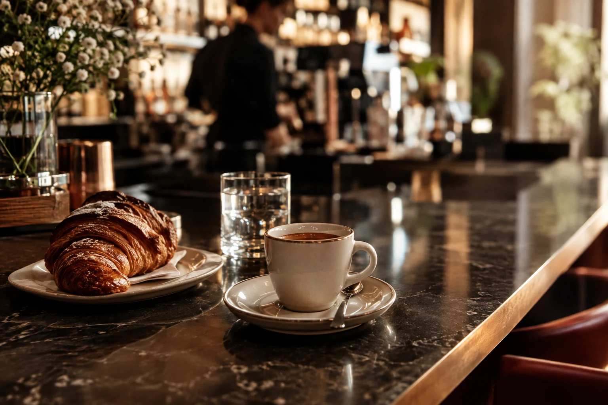
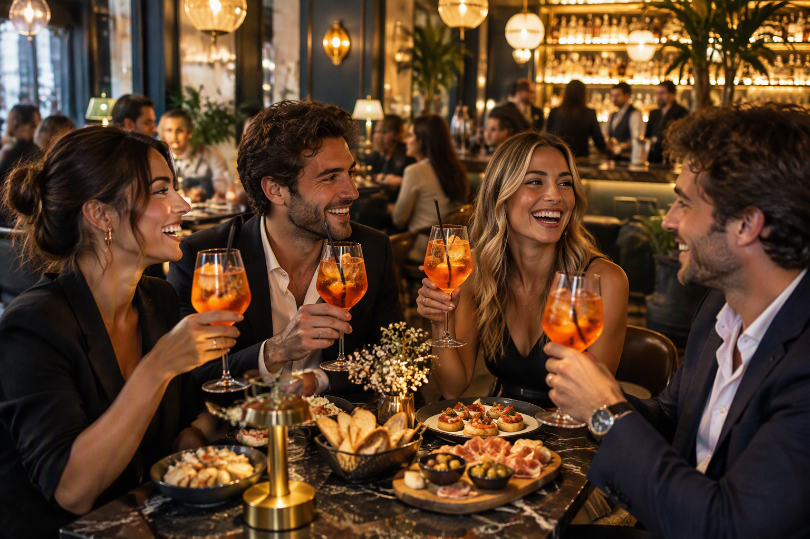
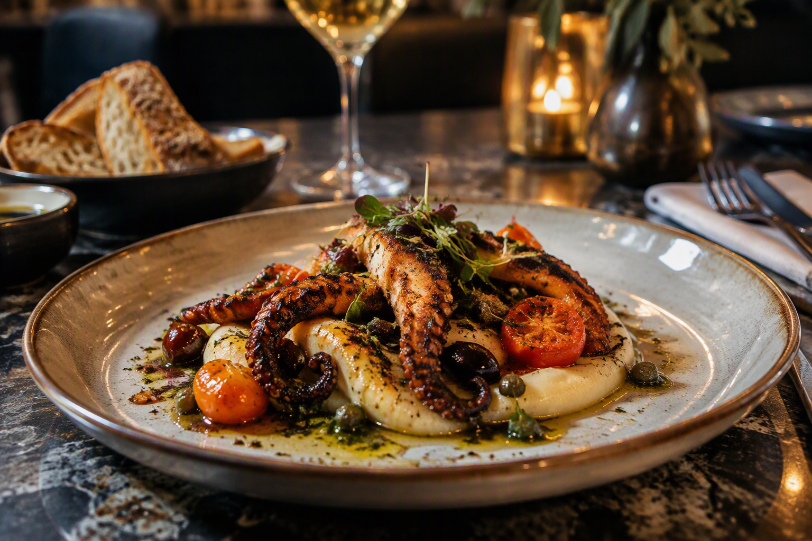
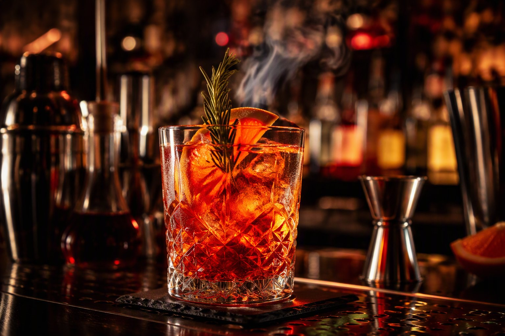
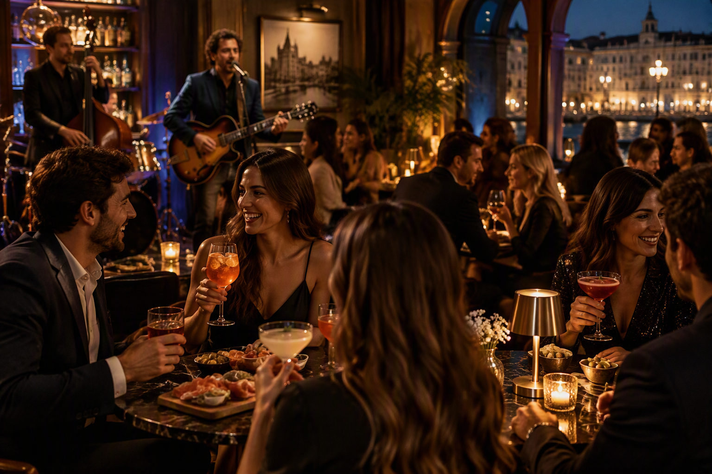

01
Good morning
Colazione
Caffetteria, croissant e una pausa dal ritmo lento.
Trieste · Café · Cocktail · Gourmet
Colazioni, pranzi gourmet, aperitivi, cocktail ed eventi in un ambiente elegante e accogliente.
Un luogo, molti momenti
Rex è il punto d'incontro dove la giornata cambia ritmo senza perdere stile.
Un ambiente contemporaneo nel centro di Trieste, pensato per una pausa, un pranzo, un aperitivo con gli amici o una serata da ricordare.
Vivi l'esperienza →
Le nostre esperienze
Dalla caffetteria alla cucina, fino alla miscelazione contemporanea: scegli il tuo modo di vivere Rex.




Live at RexOgni settimana
Musica, incontri e format speciali trasformano ogni appuntamento in un'esperienza da condividere.
Parole che brindano
Atmosfera, gusto e convivialità raccontati da chi sceglie di tornare.
★★★★★“Un aperitivo curato, in una posizione perfetta per vivere il centro di Trieste.”
★★★★★“Cocktail ricercati, ambiente elegante e il giusto mood per iniziare la serata.”
★★★★★“Dalla pausa pranzo al dopocena, un indirizzo che sa cambiare atmosfera.”
Il tuo tavolo ti aspetta
Invia una richiesta. La demo prepara il messaggio sul dispositivo senza trasmettere dati a servizi esterni.
Dove trovarci
Galleria Arrigo Protti 1
Orari indicativi
Lun – Gio07:00 – 23:30
Ven – Sab07:00 – late
Domenica07:00 – 22:00